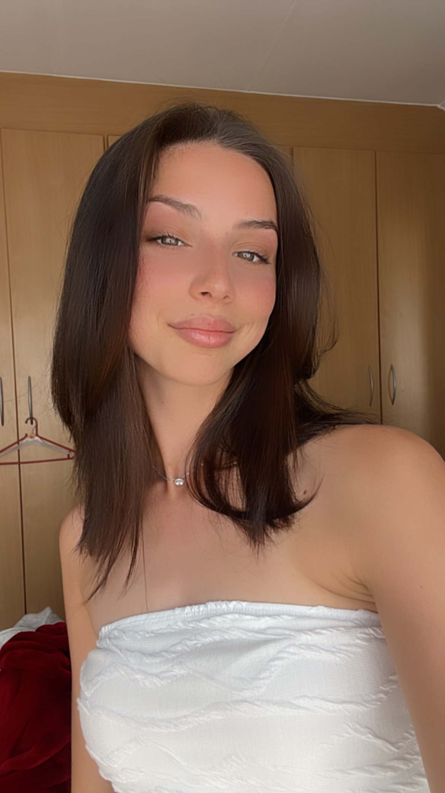
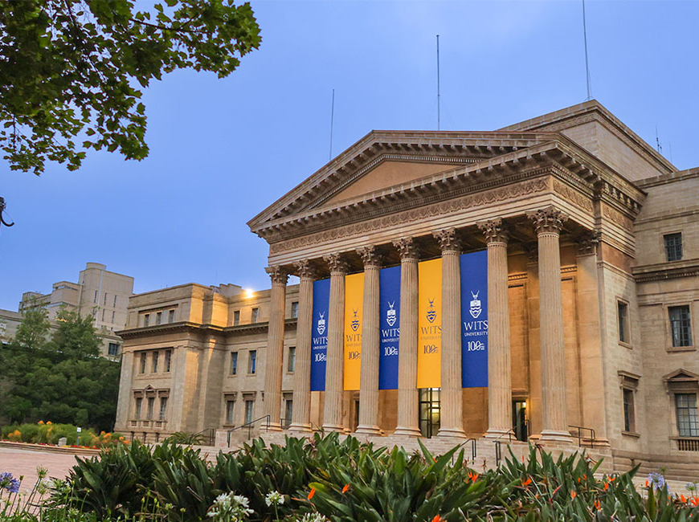

About Me
Designer, developer, and triple major finding the overlap between creativity and code.

Who I Am
I'm Sabrina Harron, a third-year Bachelor of Digital Arts student at the University of the Witwatersrand, triple majoring in Interactive Media, Game Design, and Portuguese Language. That combination says a lot about how I think. I'm drawn to work that sits at the intersection of technical skill and creative expression.
I build games, design websites, and create visual content for social media. Whether I'm writing C# in Unity, laying out a poster in Canva, or structuring a web page in VS Code, I bring the same attention to detail and the same drive to make something that feels considered and complete.
Education
Bachelor of Digital Arts
University of the Witwatersrand · Triple majoring in Interactive Media, Game Design, and Portuguese Language. Currently in my third year.
National Senior Certificate
Completed matric and went on to pursue a degree in Digital Arts at Wits.

Skills & Technologies
Game Development
Web & Code
Design & Visual
Experience
Wits Netball Club — Web Design & Visual Communication
Designed and launched a live tournament website on Google Sites, used actively on the day of the fundraising event to display fixtures, live scores, schedules, and team information. Also designed the accompanying social media poster campaign promoting the tournament.
Portuguese Language Centre — Social Media Design
Created a series of social media advertisements for the Portuguese Language Centre at Wits, promoting orientation day and various special events. Worked directly with the client through multiple revision rounds to deliver designs that met their brief.
Game Development — Infestation & Trash Dash
Independently designed and developed two 2D games in Unity as part of my Game Design major. Infestation is a whack-a-mole style game set in a hellscape environment. Trash Dash is a side-scrolling platformer where you play as a piece of trash trying to reach the bin.